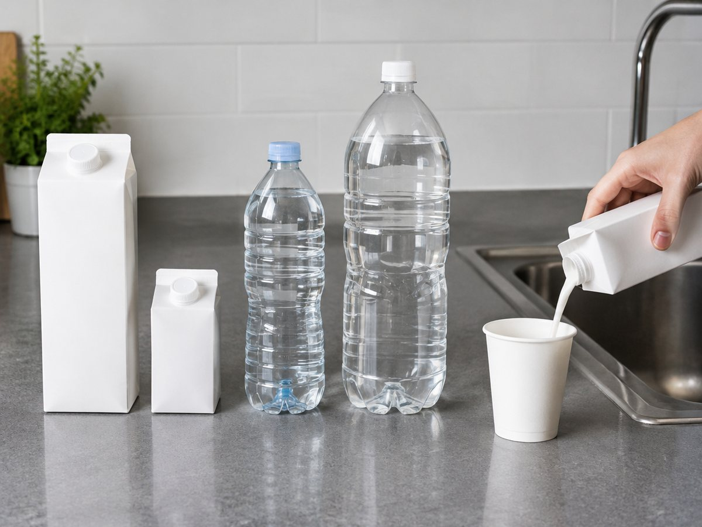

전체 단원 › 실험·활동 › 3학년 2학기 수학
우유팩·페트병 들이 비교

우유팩과 페트병, 컵에 물을 옮겨 담으며 어느 그릇이 더 많이 담기는지 비교하고 L와 mL를 익혀요.
30분 · 난이도 ★☆☆ 쉬움
준비물
- 1L 우유팩, 200mL 우유팩 — 겉에 들이가 적혀 있어 기준이 돼요
- 500mL 페트병, 2L 페트병 — 라벨의 숫자를 확인해요
- 종이컵 여러 개 — 작은 단위 그릇으로 써요
- 주방 저울 (있으면) — 무게 비교에 써요
- 들이 기록지 도안 — 아래에서 내려받아요
하는 방법
- 들이 어림하기
그릇들을 줄 세우고 어느 것에 물이 가장 많이 들어갈지 예상 순서를 기록지에 적어요. - 종이컵으로 세기
각 그릇에 물을 가득 채운 뒤 종이컵에 옮겨 부어 몇 컵이 나오는지 세요. - 기준 그릇으로 비교
200mL 우유팩으로 1L 우유팩을 채워 보세요. 5번이면 가득 차요. 그래서 1L = 1000mL예요. - 라벨과 맞춰 보기
페트병 라벨의 mL 숫자를 보고, 우리가 센 컵 수와 맞는지 확인해요. - 무게도 비교하기
저울이 있으면 물을 채운 그릇의 무게를 재 봐요. 물 1L는 약 1kg이에요.
생각해 봐요
- 모양이 다른데 들이가 같은 그릇이 있었나요?
- 키가 큰 그릇이 항상 더 많이 담길까요?
- 종이컵으로 재면 왜 정확하지 않을까요?
왜 그럴까?
그릇에 담을 수 있는 양을 '들이'라고 해요. 들이는 L(리터)와 mL(밀리리터)로 나타내고, 1L는 1000mL예요. 1L 우유팩에는 200mL 우유팩 5개만큼 들어가요. 키가 크다고 많이 들어가는 건 아니에요. 그릇의 바닥 넓이(굵기)와 높이를 모두 봐야 해요.
학교 교육과정 연결
- [4수03-17] 들이 단위 1L와 1mL를 알고, 이를 이용하여 들이를 측정하고 어림하며 수학의 유용성을 인식할 수 있다.